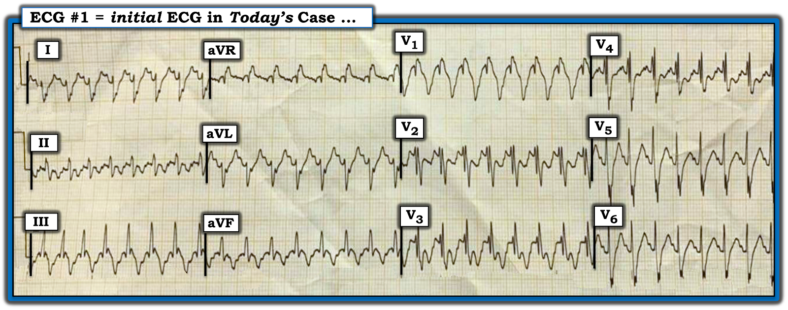
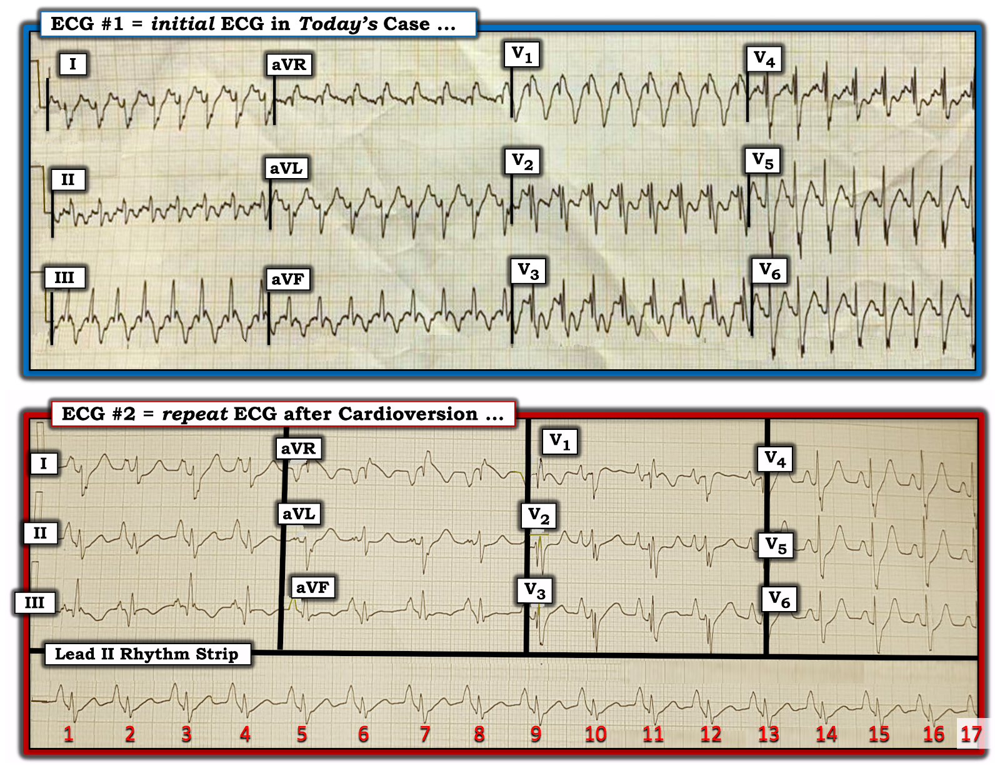
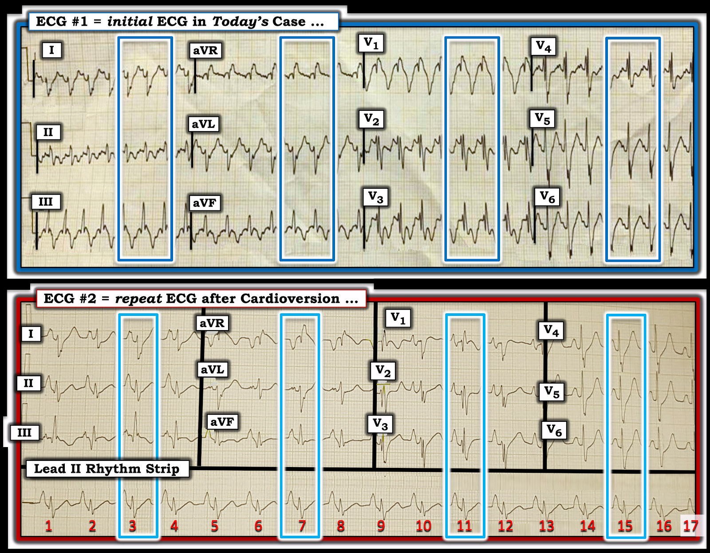
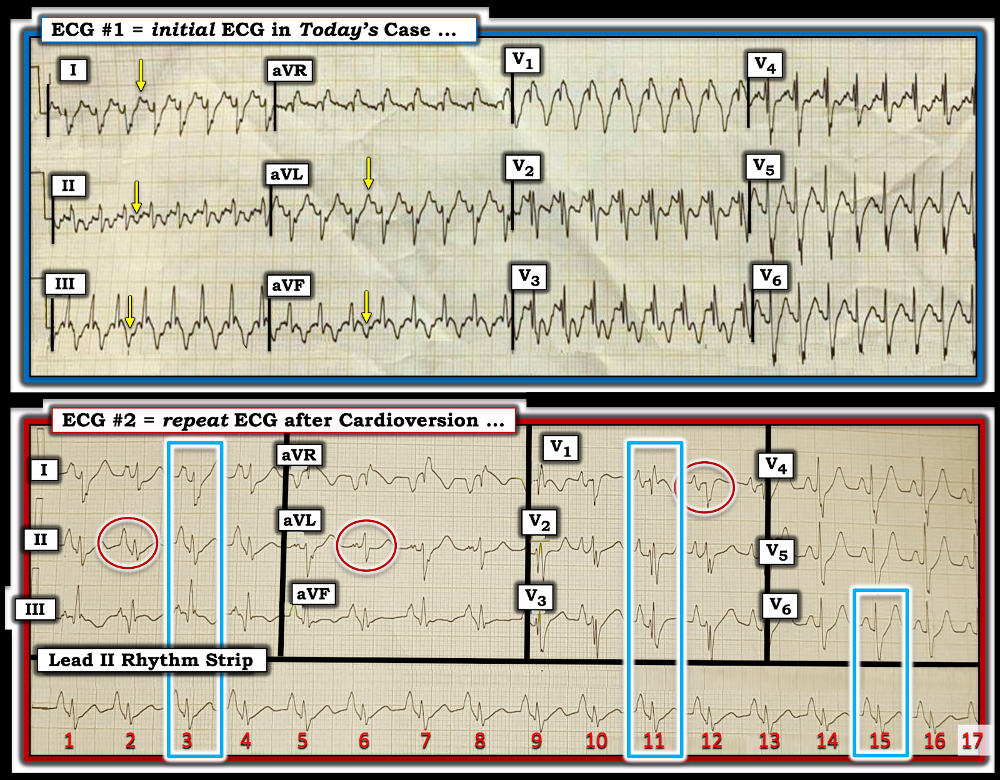

ECG Blog #422 — Ngón dùi trống có phải là manh mối để đọc điện tâm đồ?
Tôi được gửi điện tâm đồ ở Hình 1 — kèm bệnh sử như sau:
- Bệnh nhân là một nam thanh niên khoảng đầu 20 tuổi — đến khoa cấp cứu ED (Emergency Department) vì khó thở SOB (Shortness Of Breath) kéo dài đã vài giờ. Không đau ngực.
- Anh kể đã có nhiều đợt tương tự trước đây trong vài năm qua (dù có vẻ chưa từng được thăm khám chính thức về vấn đề này).
- Khám thực thể đáng chú ý có thở nhanh (tần số thở ~30/phút) và tím tái, kèm ngón tay/ngón chân dùi trống.
CÂU HỎI:
- Với bệnh sử trên — BẠN sẽ đọc điện tâm đồ ở Hình 1 như thế nào?
- Nhịp này có khả năng là VT (Ventricular Tachycardia – nhịp nhanh thất) không?


SUY NGHĨ Ban đầu CỦA TÔI về Hình 1:
Dù về mặt kỹ thuật bản ghi 12 chuyển đạo này có phần bị gấp và biến dạng — tốc độ ghi là mức chuẩn 25 mm/giây — và chất lượng bản ghi rõ ràng là đủ để đánh giá.
- Có một WCT đều (Wide-Complex Tachycardia – nhịp nhanh QRS rộng) ở Hình 1 — tần số ~190/phút, nhưng không thấy rõ dấu hiệu của sóng P xoang.
- Tôi nghĩ có thể có một dạng hoạt động nhĩ nào đó — nhưng tôi không chắc chắn về điều này. Dù có một sóng dương mảnh đi trước mỗi sóng P ở chuyển đạo I — lại không có sóng dương như vậy ở chuyển đạo II (điều cần có để nhịp là nhịp xoang).
- Tôi đã cân nhắc khả năng có sóng P ngược dòng 1:1 (dẫn truyền thất-nhĩ, VA) — nhưng tôi không biết liệu chỗ “lõm” âm mảnh ở giữa sóng ST-T của các chuyển đạo dưới là sóng P ngược dòng hay chỉ đơn thuần là đoạn ST.
- ĐIỂM THEN CHỐT (PEARL) #1: Ngay cả khi chỗ “lõm” âm này ở đoạn ST của các chuyển đạo dưới thực sự là sóng P ngược dòng — điều này cũng không giúp gì cho việc phân biệt giữa một dạng SVT (SupraVentricular Tachycardia – nhịp nhanh trên thất) với VT — vì các nhịp SVT vào lại và VT đều có thể biểu hiện dẫn truyền ngược dòng VA 1:1.
- KẾT LUẬN CỦA TÔI Cho đến Lúc này: Nhịp ở Hình 1 là một nhịp WCT đều tần số ~190/phút, không thấy rõ dấu hiệu sóng P xoang. Điều này đưa ta về chẩn đoán phân biệt thường gặp cho kiểu biểu hiện nhịp này (theo ECG Blog #361) ==> Chúng ta cần cân nhắc i) VT cho đến khi chứng minh được điều ngược lại: ii) SVT kèm hoặc BBB có sẵn từ trước hoặc dẫn truyền lệch hướng; — hoặc, iii) Một nguyên nhân khác (tức là WPW, tăng kali máu, một ngộ độc khác, v.v.).
ĐIỂM THEN CHỐT (PEARL) #2: Bệnh sử Có thể Giúp Gì?
Về mặt thống kê — Khi một người lớn tuổi có bệnh tim nền đã biết đến khoa cấp cứu với nhịp WCT đều, nhưng không thấy rõ dấu hiệu sóng P xoang — thì khả năng nhịp đó hóa ra là VT đã vào khoảng ~90% ngay cả trước khi bạn nhìn vào điện tâm đồ. Nhưng đây không phải tình huống của ca hôm nay — vì bệnh nhân hôm nay là một nam giới khoảng đầu 20 tuổi.
- Dù độ tuổi người trẻ này xếp bệnh nhân hôm nay vào nhóm dễ mắc nhất một dạng VT vô căn (Xem ECG Blog 197) — thì điều chống lại mạnh mẽ chẩn đoán VT vô căn là các dấu hiệu thực thể tím tái và ngón dùi trống ở các chi, vì các dấu hiệu này gợi ý mạnh một dạng bệnh tim phổi nền nào đó.
ĐIỂM THEN CHỐT (PEARL) #3: Còn Hình dạng QRS thì sao?
Như đã bàn chi tiết trong nhiều bài blog của tôi phân tích cách đánh giá các nhịp WCT đều — hình dạng QRS có thể hỗ trợ vô giá cho việc đi qua từng bước chẩn đoán phân biệt (Xem ECG Blog #42, cùng nhiều bài khác).
- Dù không có tiêu chuẩn hình dạng nào hoàn hảo để phân biệt dẫn truyền trên thất với VT — hình dạng QRS của một nhịp WCT đều càng giống một dạng rối loạn dẫn truyền đã biết, thì khả năng nhịp đó có nguồn gốc trên thất càng cao.
- Ngược lại — hình dạng QRS trong nhịp WCT đều càng trông bất thường (tức là càng ít giống một dạng blốc dẫn truyền đã biết) — thì khả năng nhịp đó là một dạng VT do thiếu máu cục bộ càng cao.
Vì vậy ca hôm nay đặt ra nghịch lý là mặc dù bệnh nhân còn trẻ — hình dạng QRS trên điện tâm đồ của anh lại biểu hiện nhiều đặc điểm không điển hình. Các đặc điểm này gồm: i) Phân mảnh (fragmentation) đáng kể (tức là nhiều chuyển đạo ở Hình 1 cho thấy nhiều chỗ "khía thêm" của phức bộ QRS); và, ii) Hình dạng kỳ dị của phức bộ QRS ở chuyển đạo V1, với sóng R' tròn thay vì cấu hình rsR' ba pha rõ nét hơn (như thường thấy nhất với dẫn truyền kiểu RBBB ở người trẻ).
- ĐIỂM THEN CHỐT (PEARL) #4: Sự kết hợp giữa các đợt khó thở kéo dài từ lâu ở người trẻ này với tím tái và ngón dùi trống ở các chi + hình dạng QRS không điển hình như mô tả ở trên trong cơn WCT — nên gợi ý một dạng bệnh tim phổi nền đáng kể. Đứng đầu danh sách các khả năng của tôi là một biểu hiện của CHD (Congenital Heart Disease – bệnh tim bẩm sinh) ở người lớn.
- Điều này vẫn để lại cho ta chẩn đoán phân biệt cho nhịp WCT đều ở ca hôm nay giữa VT phân nhánh (fascicular VT) (vì có phần giống dẫn truyền kiểu rbbb ở các chuyển đạo trước tim — kèm trục lệch phải rõ ở các chuyển đạo chi) — với một dạng nhịp SVT nào đó, trong đó bản ghi nền của bệnh nhân đã trở nên bất thường rõ rệt do CHD lâu năm.
- Linh cảm CỦA TÔI: Nhận thức về tính chất kéo dài lâu năm của các triệu chứng ở bệnh nhân hôm nay do một dạng CHD đã hình thành từ trước (theo giả định) — khiến tôi nghi ngờ rằng nguyên nhân trên thất có nhiều khả năng hơn, thay vì VT phân nhánh đột ngột xuất hiện. Dù vậy, tôi không thể loại trừ khả năng VT phân nhánh chỉ dựa trên một bản ghi duy nhất này.
- ĐIỂM THEN CHỐT (PEARL) #5: Tìm được một bản điện tâm đồ trước đây của bệnh nhân hôm nay có thể là cách tiết kiệm thời gian nhất để xác định LIỆU nhịp WCT đều ở Hình 1 có nguồn gốc trên thất hay không, như tôi nghi ngờ. Nếu đúng như vậy — điện tâm đồ nền của bệnh nhân khi nhịp xoang rất có thể sẽ biểu hiện hình dạng QRS rất bất thường (giống như thấy ở Hình 1) — do hậu quả của tình trạng giảm oxy máu kéo dài.
==========================
Ca bệnh hôm nay Tiếp diễn:
Điều trị nội khoa nhịp WCT ở Hình 1 — không thành công. Do đó, đã tiến hành sốc điện chuyển nhịp đồng bộ — sau đó thu được nhịp sau sốc điện chuyển nhịp như ở phía dưới Hình 2.
CÂU HỎI:
- Bạn sẽ đọc bản ghi sau sốc điện chuyển nhịp này như thế nào?
- Vì sao hình dạng QRS ở điện tâm đồ #2 thay đổi cách-một-nhát? Hình dạng QRS thay đổi này ở điện tâm đồ #2 xác nhận rằng nhịp ở điện tâm đồ #1 không phải là VT như thế nào?


Bản ghi Sau Chuyển nhịp ở Hình 2:
Nhịp xoang đã được phục hồi trên bản ghi sau sốc điện chuyển nhịp, tần số ~100/phút — được xác định nhờ có các sóng P rất lớn, dương và nhọn với khoảng PR hằng định và bình thường đi trước mỗi nhát trong số 17 nhát ở dải nhịp dài chuyển đạo II.
- ĐIỂM THEN CHỐT (PEARL) #6: Việc thấy sóng P xoang với khoảng PR giống hệt nhau đi trước mỗi nhát ở điện tâm đồ #2 — xác nhận rằng nhịp sau sốc điện chuyển nhịp có nguồn gốc xoang. Điều này có nghĩa là hình dạng QRS thay đổi cách-một-nhát hẳn phải là hậu quả của một dạng rối loạn dẫn truyền luân phiên nào đó.
- LƯU Ý: Sự thay đổi hình dạng QRS này ở điện tâm đồ #2 rõ ở một số chuyển đạo hơn các chuyển đạo khác (tức là Dù không rõ lắm ở các chuyển đạo trước tim bên V4,5,6 của điện tâm đồ #2 — hình dạng QRS luân phiên lại hiển nhiên ở các chuyển đạo như I, III, aVL, V1 và V3).
ĐIỂM THEN CHỐT (PEARL) #7: Dù hình dạng QRS trong nhịp WCT đều ở điện tâm đồ ban đầu hôm nay bất thường đến vậy — Hãy so sánh hình dạng QRS này (trong các hình chữ nhật màu XANH đậm ở Hình 3) — với hình dạng QRS của các nhát đánh số lẻ ở mỗi chuyển đạo trong 12 chuyển đạo của bản ghi sau sốc điện chuyển nhịp (trong các hình chữ nhật màu XANH nhạt ở Hình 3).
- Ngoại trừ vài khác biệt nhỏ — Chẳng phải hình dạng QRS trong cơn WCT — và ở các nhát đánh số lẻ sau khi chuyển về nhịp xoang, gần như giống hệt nhau sao?
- Điểm MẤU CHỐT: Hình dạng QRS gần như giống hệt nhau trong và sau cơn này xác nhận rằng nhịp WCT đều trên bản ghi ban đầu hôm nay không phải là VT. Thay vào đó, nó cho ta biết bệnh nhân hôm nay có một điện tâm đồ "nền" cực kỳ bất thường.


Loại Rối loạn Dẫn truyền Nào?
Như thường được nhấn mạnh trên ECG Blog này (tức là Xem ECG Blog #204) — Cách xác định nhanh loại rối loạn dẫn truyền dễ nhất (và tiết kiệm thời gian nhất) là đánh giá hình dạng QRS ở 3 chuyển đạo MẤU CHỐT ( = chuyển đạo V1 bên phải — và các chuyển đạo bên trái I và V6).
- ĐIỂM THEN CHỐT (PEARL) #8: Hình dạng QRS của các nhát đánh số lẻ trên bản ghi sau sốc điện chuyển nhịp (tức là trong các hình chữ nhật màu XANH nhạt của điện tâm đồ #2 ở Hình 4) — phù hợp với dẫn truyền kiểu RBBB/LPHB vì: i) Có phức bộ rSR' với "tai thỏ" phải cao hơn ở chuyển đạo V1 — kèm sóng S tận rộng ở các chuyển đạo bên I và V6; và, ii) Sóng S ở chuyển đạo I chủ yếu âm, với một phần thẳng cực kỳ sâu của sóng S này (Xem ECG Blog #203 để ôn lại cách chẩn đoán nhanh các blốc phân nhánh trên điện tâm đồ).
- Điểm MẤU CHỐT: Trái ngược với dẫn truyền kiểu RBBB/LPHB của các nhát đánh số lẻ ở điện tâm đồ #2 — các nhát đánh số chẵn ở Hình 4 không cho thấy dẫn truyền kiểu RBBB lẫn LPHB!


==========================
Tổng Hợp Lại Tất cả:
Cuối cùng chúng ta đã có đủ thông tin để giải thích ca bệnh hấp dẫn hôm nay:
- Nam thanh niên khoảng đầu 20 tuổi này đến viện vì một đợt khó thở cấp với nhịp WCT đều tần số ~190/phút, không thấy rõ dấu hiệu sóng P xoang.
- Không thể chẩn đoán xác định trên điện tâm đồ chỉ dựa vào một bản ghi duy nhất ở điện tâm đồ #1. Dù vậy — các dấu hiệu khám thực thể là tím tái và ngón dùi trống, cùng với tiền sử nhiều đợt khó thở kéo dài từ lâu gợi ý nhiều hơn đến một vấn đề mạn tính (có lẽ là biểu hiện của bệnh tim bẩm sinh ở người lớn) — hơn là một đợt VT đơn lẻ ở một nam thanh niên.
- Dù sao đi nữa — nhịp ở điện tâm đồ #1 buộc phải điều trị trước khi có được chẩn đoán xác định trên điện tâm đồ. Khi thử điều trị nội khoa không thành công — đã tiến hành sốc điện chuyển nhịp đồng bộ — kết quả là chuyển về nhịp xoang (như thấy ở điện tâm đồ #2).
- Bằng chứng cho thấy hình dạng QRS bất thường trong cơn WCT có nguồn gốc trên thất — đến từ việc nhận thấy hình dạng QRS trong cơn WCT gần như giống hệt hình dạng QRS của mỗi nhát đánh số lẻ sau khi chuyển về nhịp xoang.
- Điều này gợi ý rằng lý do QRS giãn rộng trên điện tâm đồ ban đầu — là dẫn truyền lệch hướng liên quan tần số (với dạng dẫn truyền kiểu RBBB/LPHB). Sau khi chuyển về nhịp xoang ở điện tâm đồ #2 — tần số thất chậm hơn cho phép dẫn truyền bình thường ở mỗi nhát đánh số chẵn.
- ĐIỂM THEN CHỐT (PEARL) #9: Việc bệnh nhân hôm nay gần như chắc chắn có một dạng CHD nặng là nguyên nhân gây các đợt khó thở kéo dài từ lâu, tím tái và ngón dùi trống — được thể hiện rõ qua các sóng P cực kỳ cao, đỉnh nhọn và nhọn hoắt (cao gần 1 ô lớn ở chuyển đạo II — đồng thời nhọn rõ ở nhiều chuyển đạo trước tim — như thấy trong các hình bầu dục màu ĐỎ ở điện tâm đồ #2). Trong bối cảnh ca hôm nay — các sóng P này có giá trị chẩn đoán RAE = P phế (P Pulmonale) (Xem ECG Blog #75) và gần như chắc chắn kèm theo tăng áp phổi.
- ĐIỂM THEN CHỐT (PEARL) #10: NHÌN lại một lần nữa điện tâm đồ ban đầu của ca hôm nay — hoạt động nhĩ đã hiện diện trong điện tâm đồ #1 (dưới dạng sóng P ngược dòng với khoảng RP' tương đối dài — như được đánh dấu bằng các mũi tên màu VÀNG ở Hình 4). Chính vì RAE (Right Atrial Enlargement – lớn nhĩ phải) rõ rệt mà khi được dẫn truyền ngược dòng, các sóng P rất lớn này đã giả dạng sóng T đảo ngược ở các chuyển đạo dưới trong cơn WCT. Nhìn lại — tôi đọc dẫn truyền ngược dòng 1:1 này là có giá trị chẩn đoán một nhịp SVT vào lại là nguyên nhân của cơn nhịp nhanh ban đầu. Với khoảng RP' tương đối dài — nhiều khả năng bệnh nhân này có một AP (Accessory Pathway – đường phụ) — và loại SVT vào lại là AVRT (Xem ECG Blog #240 — để ôn lại đầy đủ cách phân biệt AVNRT với AVRT dựa vào đặc điểm dẫn truyền ngược dòng).
SUY NGHĨ CUỐI CÙNG: Nguyên nhân nền của rối loạn nhịp nhanh hôm nay, và vấn đề chính của bệnh nhân này — dường như là biểu hiện của CHD ở người lớn.
- Như Moodie đã nêu trong bài viết của ông về Adult Congenital Heart Disease (Tex Heart Inst J: 38(6):705, 2011) — hiện nay số người mắc CHD trên 20 tuổi đã nhiều hơn số người dưới độ tuổi đó!
- Hy vọng bệnh nhân hôm nay được đánh giá đầy đủ về CHD của mình.
==================================
Lời cảm ơn: Xin cảm ơn Abdullah Al Mamum (từ Dhaka, Bangladesh) đã chia sẻ ca bệnh và bản ghi này.
==================================
==============================
Các bài ECG Blog liên quan bổ sung cho ca hôm nay:
- ECG Blog #185 — Ôn lại Hệ thống Đọc Nhịp của tôi, sử dụng Cách tiếp cận Ps, Qs & 3R.
- ECG Blog #210 — Ôn lại phương pháp Cách-Một-Nhát (hoặc Cứ-Mỗi-Ba-Nhát) để ước tính tần số tim nhanh — và bàn về một ca khác có nhịp WCT đều.
- ECG Blog #220 — và ECG Blog #361 — Ôn lại cách tiếp cận WCT ( = Wide-Complex Tachycardia – nhịp nhanh QRS rộng) đều.
- ECG Blog #196 — Ôn lại một Ca khác có nhịp WCT đều.
- ECG Blog #263 và Blog #283 — Thêm các nhịp WCT ...
- ECG Blog #197 — Ôn lại khái niệm VT vô căn, trong đó VT phân nhánh là một trong 2 loại thường gặp nhất.
- ECG Blog #346 — Ôn lại một ca LVOT VT (một dạng VT vô căn ít gặp hơn).
- ECG Blog #204 — Ôn lại chẩn đoán điện tâm đồ các Blốc nhánh (RBBB/LBBB/IVCD).
- ECG Blog #203 — Ôn lại chẩn đoán Trục và các Blốc phân nhánh trên điện tâm đồ. Để ôn lại hình dạng QRS trong các Blốc hai phân nhánh (RBBB/LAHB; RBBB/LPHB) — Xem Video Pearl trong bài blog này.
- ECG Blog #211 — VÌ SAO lại xảy ra Dẫn truyền lệch hướng?
- ECG Blog #301 — Ôn lại một WCT có nguồn gốc Trên thất! (với RẤT NHIỀU nội dung về Dẫn truyền lệch hướng).
- ECG Blog #323 — Ôn lại VT phân nhánh.
- ECG Blog #38 và Blog #85 — Ôn lại VT phân nhánh.
- ECG Blog #278 — Một ca khác có nhịp WCT đều ở người trẻ tuổi.
- ECG Blog #361 — Một WCT đều ở một nam giới trung niên.
- ECG Blog #35 — Ôn lại RVOT VT.
- ECG Blog #42 — Ôn lại các tiêu chuẩn phân biệt VT với dẫn truyền lệch hướng.
- ECG Blog #133 và ECG Blog #151— các ví dụ trong đó phân ly nhĩ thất đã xác nhận chẩn đoán VT.
- Phân tích từng bước một ca nhịp WCT đều ở người phụ nữ ngoài 80 tuổi này — Xem Bình luận của tôi trong bài đăng ngày 5 tháng 5 năm 2020 trên Dr. Smith’s ECG Blog.
- Một ca khác có nhịp WCT đều ở người phụ nữ ngoài 60 tuổi — Xem Bình luận của tôi ở cuối trang trong bài đăng ngày 15 tháng 4 năm 2020 trên Dr. Smith’s ECG Blog.
- Ôn lại các VT vô căn (tức là VT phân nhánh; RVOT và LVOT VT) — Xem Bình luận của tôi ở cuối trang trong bài đăng ngày 7 tháng 9 năm 2020 trên Dr. Smith’s ECG Blog.
- Ôn lại một loại VT khác (VT đa hình thái (Pleomorphic VT)) — Xem Bình luận của tôi trong bài đăng ngày 1 tháng 6 năm 2020 trên Dr. Smith’s ECG Blog.